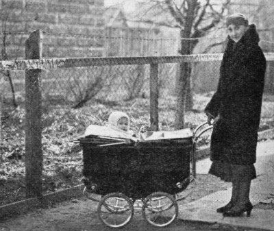

Chapter 8
1871
With the appointment of the Rabbi, the community proceeded to search for purchasable land on the other side of the Wisloka River near the Ulaszowica Bridge, for the construction of a synagogue and a home for the rabbi. Indeed in the year of 1871, the study center and the home for the Rabbi were built. Years later two more houses will be built on this land for Rabbi Tzvi Yossef, who will become the second Rabbi of Jaslo.
[Page 24]The only study center in the city was too small for the congregation that constantly grew therefore the leaders of the community decided to build a bigger study center that will provide room for all the congregants of the community.
My grandfather, Rabbi Pinhas Eliezer Halevi Liberman from Tyczyn, brother of the above, son of the late Rabbi Mordechai from Toporow, told me that as a young boy he traveled to the wedding of his brother, Dov Issachar, who married the daughter of Rabbi Rubin from Jaslo in 1881. They traveled by train from Lemberg to Zagorz where the tracks ended. They then proceeded by cart to Jaslo.
They attended services at the old synagogue that was packed with people. He heard someone say that the new community of Jaslo had between 60 and 70 Jewish families. The community coffers were empty. Still the community decided to proceed with the project of a new study center.
On the other side of the old and small study center, on the left, leading to the village of Hiclowka, stood an abandoned building that belonged to a gentile. News soon reached the community that the building and the land were for sale and negotiations began. Finally the estate was purchased.
The old building was fixed and repaired and in 1883 was opened as a synagogue. The eastern wall contained a beautiful holy arc that was decorated with flowers and garlands. Three steps led to the holy arc. Next to it stood a large column dominated by a copper “menorah” with many branches protruding. In the middle of the hall was the wooden bima; copper alloyed chandeliers were suspended from the ceiling, four big oil lamps in the corners of the synagogue. Several small flats were also built, namely for the beadle and the slaughterer. The next section was devoted to the women. Nearby was built a bathhouse with two mikvot; one had heated water and the other one cold water. The latter shared its space with the steam room.
The synagogue remained standing until 1914 when the Russian army entered the city and destroyed it. The only items left standing were the walls and some roof rafters.
[Page 25]Only with the end of World War I, in 1918, will the synagogue be repaired and restored. The initiative for the project was undertaken by a few well-to-do Jews, including my late father. Some changes were also made during the repairs and the synagogue began to service the Jewish community.
During the holiday of Sukkoth in 1934, a fire started in the bathhouse and soon spread to the study center. Only the charred walls remained standing of the synagogue. Again the Jews of Jaslo were left without a place to worship. It took a group of Jaslo Jews one to two years to prepare a new blueprint and to rebuild the synagogue accordingly. The construction was finished in 1939. The synagogue was totally destroyed during World War II.
Chapter 9
1888-1889
I already mentioned above that when the committee decided to build the synagogue the communal treasury was empty. Therefore, the leaders decided to take a mortgage in the bank. The money was issued to the association that was formed to build the synagogue. 32 people counter signed the mortgage on behalf of the association. The latter however could not keep up the payments due to the poor economic situation of the Jewish community. The banks that underwrote the mortgage had difficulty suing 32 people. They therefore decided to seize the land, the synagogue and the Rabbi's house as escrow. The entire estate was recorded in the association books as the property of one or two old Jewish residents of the city of Jaslo. The Rabbi was deeply shocked by the entire story. For he had prayed in this synagogue for 19 years and now it will be auctioned off at the block and some stranger may buy it. He called his son, Itzhak Yossef who lived in Sanok and was the son in law of the famous financier Avishel Kanner that also lived in Sanok. The latter was one of the richest merchants in the city of Sanok. The son came and paid the debts. He also registered the estate to his name. He will later become Rabbi of Jaslo.
Due to the financial problems around the synagogue, personal disputes arose between various members of the congregation. The Rabbi seeing the effects of the disputes, decided to retire and leave Jaslo for Palestine.
[Page 26]On a Friday in 1888, the Rabbi announced to the congregation that he was leaving the community and urged that it appoint his son to succeed him as Rabbi. He pointed out to the community that his son settled the debts of the community. He then bid farewell and left for Rzeszow where he spent Saturday.
The Rabbi's decision shocked the entire community. The people did not know what to make of the strange decision. They could not accept the fact that the Rabbi would leave them. The obvious question that everybody faced was what will happen to the community. Should they react and in what manner? Should they follow the suggestion of the outgoing Rabbi and appoint his son as Rabbi? The community was at a loss.
The Rabbi's oldest son-in-law, Rabbi Issachar Dov Lieberman, wanted the post but did not have enough local support. He was certain that his brother-in-law, Rabbi Tzvi Yossef, who resided in Sanok and had opened a private bank and conducted extensive business of managing estates, timber, and forests, would not be interested in the position of Rabbi of Jaslo. He therefore decided to leave Jaslo temporarily and accept the position of Rabbi of Toporow where his father, Rabbi Yaakow Mordechai just passed away.
There were some leaders that suggested that Jaslo invite Rabbi Menachem Mandil, (related to the Raduszitz and Sandz Rabbinical dynasty), the second son-in-law of the Rabbi. But the majority of the community favored the selection of Tzvi Yossef as Rabbi of Jaslo. Meanwhile his father left Rzeszow and headed to Palestine. The new appointed Rabbi received the blessing of the saintly Rabbi Yehezkel from Siniawa, the son-in-law of the Rabbi Avishel Kanner, who came with hundreds of Hassidim for Shabbat to Jaslo to honor the new appointed young Rabbi.
Chapter 10
Rabbi Rubin left the city of Rzeszow with his young son Itzchakel and reached Palestine where he settled in Jerusalem. He remained in the city for one year and felt that the city was not religious enough. He left the city and headed to the hills of the Galilee where he spent time in communion with nature and finally reached the city of Tzefat in 1890.
[Page 27]He was accepted as Rabbi in this mystical and Kabala city. For 19 years he remained at this post. He prayed at the Sandzer study center in Tzefat. His grandchildren tell us that their grandfather Rabbi Awraham Yehoshua Heshil Rubin served as Rabbi in three different places and in each place he was 19 years, namely Sokolow, Jaslo and Tzefat.
He passed away on the 21st day of Cheshvan 1908 in Tzefat and was buried there near the graves of Talmudic scholars.

Rabbi Rubin's oldest daughter, Dina, married a perpetual student related to one of the wealthy families, who owned a large estate in Eastern Galicia. The husband soon died and she was widowed. She eventually left Poland with her two daughters and settled in Palestine (one of daughters lives in Tel Aviv).
The second daughter Rizli married Rabbi Issachar Dov, the son of Rabbi of Toporow who was the son in law of the Rabbi Hirshali of Tarnow and the brother in law of the famous Rabbi Chaim of Sandz. The Rabbi of Toporow died relatively young and left a young son who was married to the daughter of the Rabbi of Biecz, the son in law of the late great Rabbi Chaim Liberman who died in Buokahara (Russia). His son, Yehoshua Heshil married the sister of Meir Moshel and lives in Tel Aviv.
The third daughter was Primitel and she married Rabbi Menachem Mandil (grand son to the Rabbi Ber Maradoshitz and Rabbi Chaim of Sandz). He was a personality and familiar with the mystical scholarly world. He bought the land from the inheritors of Israel Melamed and built a study center and a dormitory for students. Many Hassidim from Jaslo prayed at the study center that was located at Targowica Square. In later years, Rabbi Menachem Mandil slowly distanced himself from people, avoided conversation and devoted himself to study. The family had one son named Yona and a daughter named Yutali. The son, Rabbi Yona Mandil was the son in law of the Rabbi Eliezer from Oshpitzin that resided many years in Jerusalem. Rabbi Yona Mandil was a Talmudic scholar devoted himself to the study of the torah and was very observant. He lived in Jaslo.
A few years after his marriage, his wife died and left him with a daughter and two boy infants. The daughter grew up with her maternal grandfather in Oshpitzin and the sons lived with their paternal grandfather. Chaim and Awraham Yehoshua attended the Bobowa Yeshiva. The younger one then went to Palestine where he continued his studies in Jerusalem. He married well and devoted himself to the study of the torah.
Yutali, the daughter of Rabbi Mandil, was a sensitive and intelligent woman. She married Moshale the son of Rabbi Itzhak Tuvia Rubin from Sandz. He was a very hospitable person, very active in communal affairs, familiar with the general population and well connected with the authorities. Although he was a candidate for the post of Rabbi, he devoted his free time to the well being of the community and needy individual Jews.
Suddenly, disaster struck, his wife died and left him with an infant son named Eliezer Yerucham. The tragedy caused him a severe shock and it took him sometime to recover. He moved from Jaslo to Sandz. He later became military chaplain in the Polish Army and was very active on behalf of Jewish soldiers in the army. With the fall of Poland, he managed to reach Russia but soon became ill and passed away. His son Eliezer Yerucham managed to reach Palestine, settled in Jerusalem where he continued his studies. He eventually left for the States.
[Page 29]Chapter11
Rabbi Tzvi Yossef was appointed Rabbi of Jaslo and immediately started to build two houses on the estate of the synagogue. After all, the place was registered in his name. He built for himself a magnificent villa covered in greenery. The outside was covered with greenery and plant climbers. Balconies protruded from many places and flowerbeds were everywhere. The entrance columns were covered with greenery. Next to the house, he built a large “sukkah” with a slanted roof that was divided into two parts so that the roof could be closed when it rained. The house itself was the residence of the Rabbi and it contained a large reception hall where the judicial rabbinical council met. The next house faced the road and was allocated for his sons and his father in law Rabbi Hirshele.
During his stay as spiritual leader, the community grew and contained hundreds of families. They opened businesses, workshops and small industrial plants. He administered the needs of his flock with kindness and perseverance. Fifteen years after his appointment as Rabbi, the famous synagogue was completed. He was considered one of the richest Rabbis in Western Galicia. He combined Torah and guidance. His straight posture, noble face with two eyes emitting warmth and purity, attributed to him charm and kindness. He visited Palestine prior to WWI and maintained extensive contacts with his family and friends.
[Page 30]Many Jews left Jaslo when World War I started but the Rabbi remained to guide and protect his flock. This stand will cost him dearly later on during the Russian occupation of the city. As Rabbi he was often called by the military commandant of the city to explain all kinds of problems and situations that involved Jews. The interrogators were not the friendliest people, certainly not the Rabbi, and frequently threatened him. Still he stood his ground and defended his flock with sheer determination and bravery.
I still remember the bitter winter of 1914 following the Russian occupation. Military chaos ruled the city; the soldiers went on a rampage, especially against Jews. Some Russian officers and soldiers seized the Rabbi and led him to the synagogue where they abused him and accused him of having committed crimes against the Russians. They threatened to shoot him on the spot if he did not admit to the charges. Of course, the Rabbi refused to confess. They then abandoned the synagogue and left him inside with the doors locked. The Rabbi tried to leave but could not for he did not have the keys. For hours the Jewish population did not know what happened to the Rabbi and there were serious fears for his life. By accident someone discovered that the Rabbi was locked in the synagogue and freed him.
The Russians eventually retreated from Jaslo and decided to take hostages with them. They selected the Rabbi and a few other well-placed Jews with them. The Jews of Jaslo paid the ransom of 600 rubles that was imposed on these hostages. The Russians took the hostage money, bought spirits and consumed them; eventually they released some Jews and the Rabbi but soon rearrested him and other hostages. He was sent from place to place and eventually reached the city of Kiev, Ukraine.
The writer Sh. Ansky wrote in his book entitled “ Hurban Hayehudim” – or destruction of the Jews”…in this room were seated 17 Rabbis, ten of them were very old, suddenly I saw in the room the Jaslo Rabbi, he looked at me with his childish eyes that emitted rays of warmth and a doze of spirit. He told me that during Passover, the Russians decided to arrest him a second time. He decided to pay them 600 rubles as ransom money, whereupon they left him alone. Within a week they returned and arrested him as a war hostage.
He remained in Russia for four years. He returned a broken man. His spirit was destroyed. Signs of depression affected him and he lacked energy. The sparks in his eyes were gone, instead hollowness appeared. His body weakened by the day and he became gravely ill. Then one day in Hannukah of 1928, he passed away. He was Rabbi of Jaslo for 40 years,
[Page 31]The funeral took place in the evening and almost the entire Jewish population partook in the funeral. All those involved with the arrangements for the funereal went to the mikveh to ritually cleanse themselves. The water was heated for the occasion. The rabbis of the neighboring communities came to pay their respects. Amongst the Rabbis that eulogized the Jaslo Rabbi was Rabbi, Shmuel Fuhrer, the Krosner Rabbi. He began his eulogy at the great synagogue of Jaslo by quoting a line from the torah section of the week” …and Yossef—Reb Tzvi
Yossef – he is the ruler of the country, he is the provider for the country, the entire nation bows to him.”
He left two sons and four daughters. Rabbi Eklimelech assumed the post of Rabbi of Jaslo. The second son Aaron (the young Mandli) died as a young man. The daughters were named Mirci, Dinaci, Rizi and Pesia. (The daughter Shasha died after a short illness while being engaged)
Chapter 12
The oldest son, Rabbi Elimelech was the son in law of Rabbi Awraham Chaim of Flantsch - the grandson of the Rabbi Eliezer of Dzikow and the Rabbanit Margalia.

Following his marriage, he devoted himself to studying and teaching torah. The religious youth of Jaslo flocked to his lectures including the author. He assumed the post of Rabbi of the city following the passing of his father. He was also appointed to head the religious judicial council of Jaslo.
Like his late father, he too was very distinguished looking and emitted a ray of nobility; his large yellow beard covered his face. He remained at his post for ten years.
He escaped to Tarnow with the outbreak of WWII, remained there for a while, and then returned to Jaslo to be with his younger brother in time of need. He was soon seized by the Germans along with my father and a few other influential Jews in the city. They underwent terrible tortures and died with the famous line “Shema Israel”- or hear Israel on their lips.
He had two daughters, Rachelci and Donaci, both well natured and graceful. The oldest was known as an educated woman and was involved in social work. She married Dovidl Halbershtam- grandson of the famous dynasty of Sandz, who was a perpetual torah student He was maintained by his father law while he continued his studies. They had two children, Awraham Chaim, a genius, and Tziporale. The former was soon accepted as Rabbi of Dobri in Czechoslovakia and left Jaslo.
The younger daughter, Dinahci, was known for her kindness and sensitivity. She married Rabbi Yoel Hilperin, the son of the Rabbi of Dubshitz-descendant of the Yachish dynasty- grandson of Rabbi Feibish Brezner. The latter was the descendant of 14 generations of Rabbis. Indeed the study of the torah returned full cycle for Rabbi Yoel Hilperin proved to be a great Talmudic scholar as well as knowledgeable in general education. He resided in Jaslo with his in laws and devoted himself fully to the study of the torah. They had two daughters and a son.
With the outbreak of WWII, he managed to flee to the Russian sector but was arrested on crossing the border. Eventually managed to reach the city of Boukhara where he helped Jews in need. He is well remembered by the Jews of the city for his devotion to their cause.
[Page 33]Following the war, he managed to reach the D.P. (displaced persons) camp of Bergen Belsen (in the British sector of Germany, translator). He was appointed Rabbi of the camp and became very active in helping the surviving Jews. He was involved in many social organizations. He also worked very closely with Rabbi Shlomo Kahana, head of the judicial council of Warsaw-presently in Jerusalem- on behalf of the women whose husbands were missing. He published a special book entitled “Osef Takanot Agunot” or collection of rules regarding married women whose husbands disappeared. With the closure of the camp he left for the USA and settled in Brooklyn.
{kind=link}

The third son of Rabbi Elimelech, Mandli, had a pleasant disposition, smart and intelligent, married to Lemberg where he resided until he left for the USA where he assumed the title of Rabbi of Jaslo. In the prime of his life, he fell ill and soon passed away. He left a wife and an infant son. The wife remarried Rabbi Moshale Rubin from Sandz.
Mirci, the oldest daughter married Rabbi Hershli Rubin, the famous scholar known as “ from the Kloiz” of Tarnow. He was an erudite Talmudic scholar. He resided in Jaslo with his father in law and refused to assume a rabbinical position. He devoted his life to the study of the Talmud. He barely consented to lead the services on Saturdays and holidays at the synagogue (He visited Palestine prior to World War I.)
He had four sons and two daughters. The oldest son Asher was a torah scholar and devoted himself to the study of the torah. He married Ressler's daughter. His father in law was wealthy resident of Frysztak and this is where the couple lived for many years until they decided to return to Jaslo. He tried business ventures but failed. He then received a job in the kehilla.
The second son was Ephraim also a devoted student to the studies of the torah. He was a pleasant person, very familiar with the Talmud and rabbinical literature. He married the daughter of Rabbi Feivel Zak from Bardajew and the young family moved there. Several years prior to WWII, he moved to Belgium where he was appointed to head the “ Reish Mesivta”- or Yeshiva in Antwerp.
The two younger sons were yeshiva students and were known for their fanatical religious views. The two daughters were named Rivali and Sarci. Both were pleasant and sensitive women. The younger one was a teacher at the “Beit Yaakow” school for girls.
The second daughter of Rabbi Tzvi Yossef Rubin, Dinahci, married Rabbi Chaim Baruch, head of the religious judicial council of Wisnic.
Rizi, the third daughter of the Rabbi married a descendant of a famous Rabbi and moved to Lodz. The fourth daughter, Pessia, well read, intelligent and possessed a modern outlook on life. She married Rabbi Dudil Horowitz, son of the Rabbi of Mielec in Galicia.
Dudil was an intelligent, educated and well-versed individual. Familiar
[Page 35]with the Talmud and with general events. Observed strictly the commandments but was aware of the new winds in the air. Being the son of a Rabbi, he was familiar with the burning issues of the day for the Jews. He sincerely hoped for the fulfillments of the prophecies for Israel via the hands of the Zionists. His visions and thoughts were not understood or accepted by these contemporaries. He showed that torah observance and education could mix.
He left Poland and settled in Vienna and then in Berlin. Although he was involved in business, he still devoted time to the communal affairs. He was well liked by the community. In the twenties he left for the USA with his family. His youngest daughter, Sarah is in Israel, she holds an important position in the foreign office.